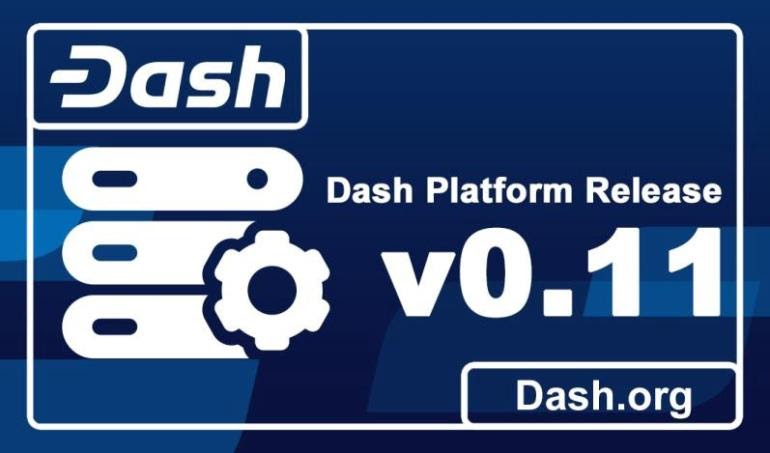

Last Updated: 2020-03-22
Dash Platform is built on top of the network of the leading cryptocurrency Dash, or ‘Digital Cash' (dash.org) and provides the technology to create distributed, or decentralised, applications.
Evonet is the initial development network provided for experimentation and evaluation of Dash Platform features, named after the project's codename, ‘Evolution'.
You'll be able to safely build and test your DApp without worrying about costs or making mistakes
We're going to build a simple ‘hello world' DApp which stores the names of registered users.
.
As well as online documentation, there's an active community happy to help with your questions in the Dash DApp Developers Discord
In this codelab We're going to using the DashJS library, which makes the Dash Platform available in the browser and provides a single entry point for all its the features.
There's other ways to use access Dash Platform: on the server with Nodejs and in an increasing number of other languages such as Java, Kotlin & Go. You can find out more in the references at the end of the lab.
The DashJS Library also has more features than we explore in this introductory tutorial.
The full API reference documentation and more examples for DashJS are available here: https://dashevo.github.io/DashJS
Let's get started!
Create a new file and save it as index.html
Add a script tag to include the DashJS Library.
<script src="https://unpkg.com/dash"></script>
That's it! - we're ready to write some code.
A mnemonic is a sequence of words that can be used to generate private keys.
hello-world.js
<script>
const DashJS = require("dash");
const sdk = new DashJS.SDK({
network: "testnet",
mnemonic: null,
});
const mnemonic = sdk.wallet.exportWallet();
console.log({mnemonic});
</script>